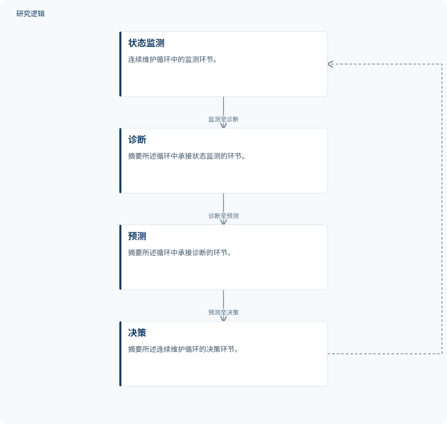

摘要解读
工业设施数字化与维护类型分类：一项综述
Digitalization in Industrial Facilities and the Classification of Maintenance Types: A Review
解读更新 2026-11-10 10:03 · 依据公开摘要整理，未核验全文细节
工业设备维护如何从故障后的修复，转向依据状态与寿命预测作出决策？这篇综述将维护类型分类与数字化技术联系起来，帮助读者理解：预测性维护并非孤立选项，而是资产管理连续过程中的组成部分。
文章目录
维护类型之间，是否只有替代关系？
工业数字化正在改变生产资产的监测、建模与管理方式，维护管理是其中的重要领域。摘要指出，传统纠正性维护和基于时间的维护，正逐步转向数据驱动、基于状态和预测性的策略。文章关注的不只是技术更新，还包括不同维护类型如何在一致框架下得到组织与理解。
沿“被动—主动”轴梳理维护策略
研究采用叙述性、非系统性综述，资料来自同行评审期刊文章，并补充以可靠性为中心的维护领域的原始文献。作者沿“被动—主动”轴分类和比较纠正性、计划性／周期性、基于状态、预测性、以可靠性为中心、基于风险以及机会性维护。
技术讨论涵盖信息物理系统、工业物联网、数字孪生、机器学习和剩余使用寿命（RUL）估计，并延伸至大语言模型与生成式人工智能、联邦与边缘学习、可解释人工智能及数字孪生互操作标准。这里呈现的是综述范围，不能据此认定这些技术均已在同一系统中实现。
依据摘要整理的维护决策循环


仅展示摘要明确提出的状态监测、诊断、预测与决策关系，并非论文原图，不代表具体系统配置或验证结果。
下载 SVG图示关系说明
实线表示相邻阶段的信息流，虚线表示跨阶段联系或反馈。
状态监测 → 诊断：监测至诊断；诊断 → 预测：诊断至预测；预测 → 决策：预测至决策；决策 → 状态监测：持续循环
从维护选项走向连续决策过程
摘要报告的核心认识是：数字化将维护类型重新置于“状态监测—诊断—预测—决策”的连续循环中。不同维护类型不再只是相互排斥的选项，而可成为一体化资产管理连续过程中的组成部分；以人为中心的维护与可信人工智能，也被纳入这一讨论。
作者还提出一个概念性数字维护框架，将数字孪生、基于RUL的维护间隔计算、预期盈亏指标（ePLI）与提醒／报警决策层耦合。摘要说明，ePLI通过预期损失表达式、基于阈值的提醒／报警规则及示例应用场景加以形式化。这属于框架与示例层面的报告，不能直接解读为工业部署效果已经得到验证。
概念框架不等于效果验证
仅凭本次摘要，无法判断文献检索与筛选的具体过程，也无法确认示例场景的数据来源、设备样本规模、比较基线以及验证范围。摘要未提供可用于判断预测精度、维护成本或停机损失改善的结果，不能将这些信息缺口写成论文没有开展相关工作。此外，所供摘要末句存在截断，面向实践者的结论未完整呈现。
阅读启发：追问预测如何转化为维护行动
阅读启发：理解智能运维时，可将注意力从“用了什么模型”移向“预测如何进入决策”。进一步阅读时，值得核对RUL如何影响维护间隔、ePLI如何连接预期损失与报警阈值，以及人在决策中承担何种角色。对于大语言模型，当前摘要支持其作为综述议题出现，尚不足以判断具体应用效果。
以上为本站阅读启发与建议，不是论文已验证的结论。